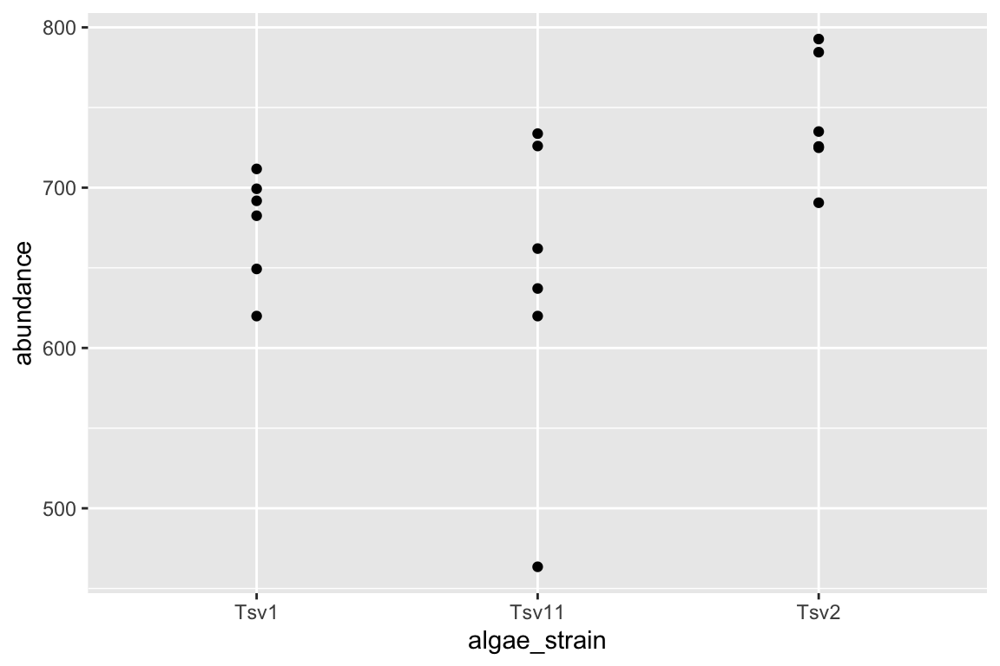
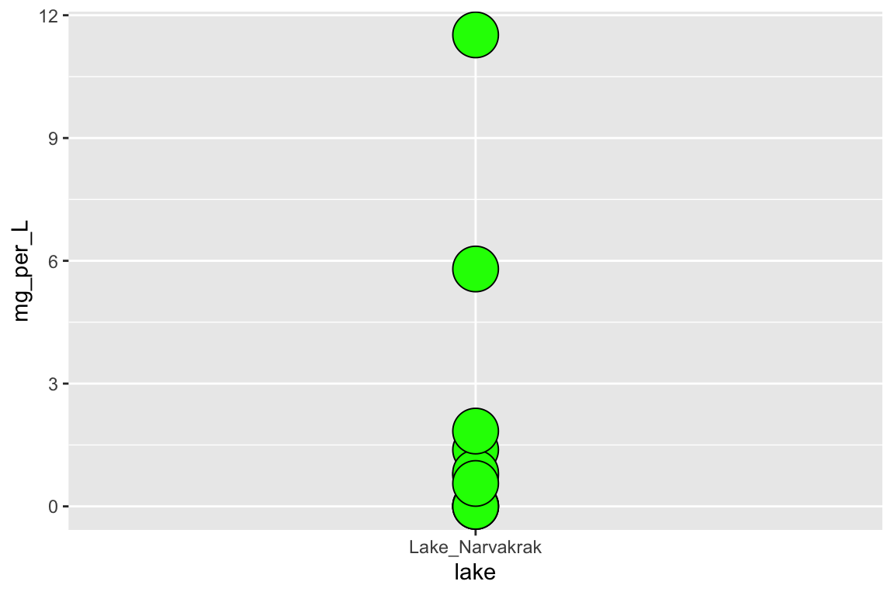

Chapter 5 Exercises 1
In this set of exercises we’re going to practice importing, filtering, and plotting data. We’re going to work with two datasets: (i) algae_chemistry_data.csv and (ii) alaska_lake_data.csv. By clicking on those links you can download each dataset.
For these exercises, you will write your code and answers to any questions in the Script Editor window of your RStudio. Then you will save that file and send it to me. That file comprises your submission for this assignment. I should be able to open and run the file on my computer (after changing the pathnames, if any - so don’t worry about compatibility for those). The file should contain both the code that can perform the actions described below and text that answers the questions asked below. You can download an example of what this file might look like here. If you have any questions please let me know
5.1 Part 1: Algae Chemistry Dataset
5.1.1 Question 1: Importing data
Import the algae chemistry data. Remember that read_csv() is part of the tidyverse, so that library needs to be loaded into your R session. Also remember that another option is to paste and run readCSV <- function() { return(readr::read_csv(file.choose())) } in your R Console, which then gives you access to the function readCSV(). That command doesn’t require an input path, so you don’t need to mess around with slashes and quotes. If you need examples of how to import data, please see the R Basics section of this book.
5.1.2 Question 2: Dataset dimensions
How many rows and columns does the algae chemistry dataset have? (hint: when you display the dataset on your screen by typing its name into the console, dimensions are also displayed). Write the answer to this question in your R Script right below the code you use to find the answer.
5.1.3 Question 3: Objects
Import the algae chemistry data and send it into a new object called algae_chemistry_data. Remember about <-. See the R Basics section of this book if you need help.
5.1.4 Question 4: Filtering
5.1.4.1 A
Now that you have the algae data imported and stored in an object called algae_chemistry_data, filter the data so that only entries are shown for which the chemical_species is “FAs”. What are the dimensions (i.e. number of rows and columns) of the resulting dataset?
5.1.4.2 B
Now filter the dataset so that only entries for the algae_strain “Tsv1” are shown. What are the dimensions of the resulting dataset?
5.1.4.3 C
Now filter the dataset so that only entries with an abundance greater than 250 are shown. Note that > can be used in the filter command instead of ==, and that numbers inside a filter command do not require quotes around them. What are the dimensions of the resulting dataset?
5.1.5 Question 5: Plotting
Make a ggplot that has algae_strain on the x axis and abundance on the y axis. Remember about aes(). Use points (geom_point()) to represent each compound. You don’t need to color the points. If you need a refresher on how to make a ggplot, please refer to the chapter on ggplot2.
Which algae strain has the most abundant compound out of all the compounds in the dataset?
5.1.6 Question 6: Plotting
Make a ggplot that has abundance on the x axis and chemical_species on the y axis. Use points to represent each compound. You don’t need to color the points.
Generally speaking, what are the two most abundant classes of chemical species in these algae strains? (FAs/Fas stand for fatty acids, AAs/Aas stand for amino acids.)
5.1.7 Question 7: Filtering and plotting
I am going to show you an example of how you can filter and plot at the same time:
library(tidyverse)
algae_chemistry_data <- read_csv("https://thebustalab.github.io/R_For_Chemists/sample_data/algae_data.csv")
## Parsed with column specification:
## cols(
## replicate = col_double(),
## algae_strain = col_character(),
## harvesting_regime = col_character(),
## chemical_species = col_character(),
## abundance = col_double()
## )
ggplot(data = filter(algae_chemistry_data, chemical_species == "essential_Aas"), aes(x = algae_strain, y = abundance)) +
geom_point()
Using the above as a template, make a plot that shows just omega_3_polyunsaturated_Fas, with algae_strain on the x axis, and abundance on the y axis. Color the points so that they correspond to harvesting_regime. Remember that mapping a feature of a shape onto a variable must be done inside aes(). Change the plot so that all the points are size = 5. Remember that mapping features of a shape to a constant needs to be done outside aes(). Which harvesting regime leads to higher levels of omega_3_polyunsaturated_Fas?
5.1.8 Question 8: Filtering and plotting
Use a combination of filtering and plotting to show the abundance of the different chemical species in just the algae_strain called “Tsv1”. Use an x and y axis, as well as points to represent the measurements. Make point size correspond to the replicate, and color the points according to harvesting regime.
5.1.9 Question 9: Open-ended plotting
Make a plot that checks to see which chemical_species were more abundant under light as opposed to heavy harvesting_regime in all three replicates. Use filtered data so that just one algae_strain is shown, an x and a y axis, and points to represent the measurements. Make the points size = 5 and also set the point’s alpha = 0.6. The points should be colored according to harvesting_regime. Make 3 plots, one for each strain of algae.
5.1.10 Question 10: A peek at what’s to come…
Take the code that you made for Question 9. Remove the filtering. Add the following line to the end of the plot: facet_grid(.~algae_strain). Remember that adding things to plots is done with the + sign, so your code should look something like:
ggplot(data = algae_chemistry_data, aes(x = <something>, y = <something else>)) +
geom_point(aes(<some things>), <some here too>) +
facet_grid(.~algae_strain)Also try, instead of facet_grid(.~algae_strain), facet_grid(algae_strain~.) at the end of you plot command. (note the swap in the position of the .~ relative to algae_strain). This means your code should look something like:
ggplot(data = algae_chemistry_data, aes(x = <something>, y = <something else>)) +
geom_point(aes(<some things>), <some here too>) +
facet_grid(algae_strain~.)What advantages does this one extra line provide over what you had to do in question 9?
5.2 Part 2: Alaska Lakes Dataset
5.2.1 Question 1: Importing Data
Import the Alaska lakes dataset into R and store it in an object. You can download the dataset from the link at the top of this page of exercises.
5.2.2 Question 2: Objects
How many variables are in the Alaska lakes dataset?
5.2.3 Question 3: Filtering
Filter the data set so only meausurements of free elements are shown. Remember, it’s ==, not =. What are the dimensions of the resulting dataset?
5.2.4 Question 4: Plotting
Make a plot that shows the water temperatures of each lake. Don’t worry if you get a warning message from R about “missing values”. Which is the hottest lake? The coolest?
5.2.5 Question 5: Plotting
Make a plot that shows the water temperature of each lake. The x axis should be park, the y axis water temp. Add geom_violin() to the plot first, then geom_point(). Make the points size = 5. Color the points according to water_temp. Which park has four lakes with very similar temperatures?
5.2.6 Question 6: Filtering and Plotting
From the plot you made for question 5, it should be apparent that there is one lake in NOAT that is much warmer than the others. Filter the data so that only entries from park == "NOAT" are shown (note the double equals sign and the quotes around NOAT…). Combine this filtering with plotting and use geom_point() to make a plot that shows which specific lake that is.
5.2.7 Question 7: Filtering and Plotting
Make a plot that shows which lake has the highest abundance of sulfur.
5.2.8 Question 8: Open-ended Plotting
Make a plot that uses geom_point(). Set the “shape” aesthetic of the points to 21, i.e. geom_point(aes(...), shape = 21). This gives you access to a new aesthetics: fill. It also changes the behaviour of the color aesthetic slightly. Here is an example:
library(tidyverse)
lake_data <- read_csv("https://thebustalab.github.io/R_For_Chemists/sample_data/alaska_lake_data.csv")
## Parsed with column specification:
## cols(
## lake = col_character(),
## park = col_character(),
## water_temp = col_double(),
## pH = col_double(),
## element = col_character(),
## mg_per_L = col_double(),
## element_type = col_character()
## )
ggplot(data = filter(lake_data, lake == "Lake_Narvakrak"), aes(x = lake, y = mg_per_L)) +
geom_point(shape = 21, size = 10, color = "black", fill = "green")
Now we have lots of aesthetics we can map to: x, y, size, color, and fill (leave shape set to 21 for now). Make a plot of your own design. It should include filtering, and all the aesthetics listed above, though whether you map them to a variable or a constant is up to you.
When you are done with this plot, take a screen shot of it. Go to THIS GOOGLE SHEET, make a slide for yourself (you don’t have to include your name), and paste your screen shot there. Add a small caption that explains how your variables are mapped.